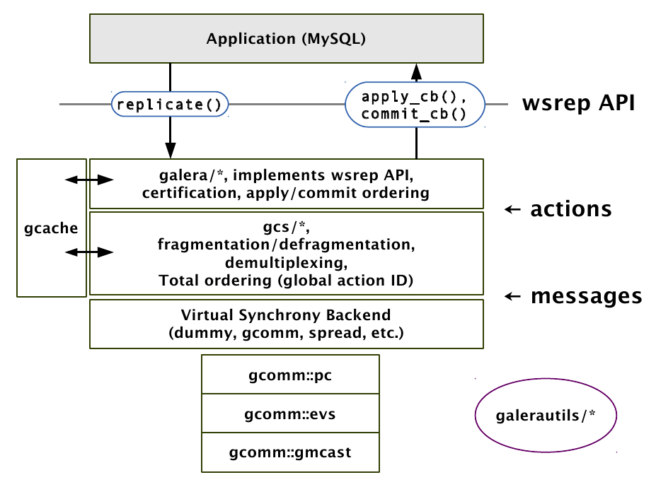

galerac
Table of Contents
1 galerac
代码整体结构示意图

1.1 overview
- asio # asynchronous io.
- chromium # compiler related code.
- common # common definitions.
- galera # replicator.
- galerautils # common utilities.
- garb # arbitrator
- gcache # general cache.
- gcomm # group communication.
- gcs # group control system.
- scripts
- tests
- www.evanjones.ca # crc32 implementation.
1.2 wsrep-api
1.2.1 overview
files
- wsrep_api.h # header
- wsrep_loader # load/unload wsrep_t
- symbol=wsrep_loader
- type=int wsrep_loader_fun(wsrep_t*)
- wsrep_dummy # example or stub
- wsrep_uuid # uuid helper
- wsrep_gtid # gtid helper
- wsrep_listener # event dumper
capabilities
- Replication provider library
- load/unload
- configuration
- status
- Write set
- population calls
- replication calls (at commit)
- Prioritized transactions
- Lock queue modified
- Aborting local victims
- TO isolation for DDL queries
1.2.2 concept
- sst(snapshot state transfer)
- ist(incremental state transfer)
- logger
- provider
- CAP(certain provider capabilities)
- flags
- status
- uuid/gtid
- UUID 节点状态改变及顺序的唯一标识 note(dirlt)：集群建立之初的状态标记？
- GTID Global Transaction ID, 由UUID和偏移量组成 note(dirlt)：以UUID为base，每次事务通过偏移量反应
- example: 45eec521-2f34-11e0-0800-2a36050b826b:94530586304
- undefined: 00000000-0000-0000-0000-000000000000:-1
- evolve: 00295a79-9c48-11e2-bdf0-9a916cbb9294:0 => 00295a79-9c48-11e2-bdf0-9a916cbb9294:1
- group member（节点成员信息）
- member_status
- memver_info
- group view(视图信息，比如整个集群有多少个节点，每个节点同步进度如何？）
- view_status
- view_info
- wsrep_init_args(arguments)
- wsrep_t(interface)
1.2.3 wsrep_init_args
note(dirlt)；这个应该是和上层相关的实现比如MySQL，如何apply, commit等
- (D)app_ctx 回调使用的context
- (D)node_name 当前节点/实例名称，对应变量wsrep_node_name
- (D)node_address 当前节点/实例地址，对应变量wsrep_node_address
- (D)node_incoming 对应变量wsrep_incoming_addresses 可以接受连接请求的节点
- (D)data_dir 当前数据库的目录，对应变量wsrep_data_home_dir
- (D)options 选项
- (D)proto_ver 协议版本
- (D)state_id 应用初始状态id
- (D)state 应用初始状态数据
- logger_cb # mysql如何打印galera日志
- view_handler_cb # 新节点加入会比较本地状态uuid和集群状态uuid. 初始同步，joiner动作
- apply_cb # mysql如何执行binlog
- commit_cb # mysql如何提交事务
- unordered_cb # note(dirlt)：do nothing?
- sst_donate_cb # 初始同步，donor动作
- synced_cb # mysql启动等待状态一致之后会调用这个函数，修改变量wsrep_ready从OFF到ON
1.2.4 wsrep_t
note(dirlt)：这个应该是和下层相关的实现比如Galera，它定义了整个replication的逻辑
- (D)version 版本
- init 初始化 wsrep_init_args
- capabilities 支持功能
- options_set 设置选项
- options_get 获取选项
- connect 建立和集群的连接
- disconnect 断开和集群的连接
- recv 开始接收replication event. 正常情况下这个函数一直运行，期间执行其他操作，如果返回的话那么表明出错或者是退出。
- pre_commit 事务提交之前
- post_commit 事务提交之后
- post_rollback 事务回滚之后
- replay_trx 回放事务(slave)
- abort_pre_commit 在事务提交之前终止
- append_key 将key添加到事务ws. 修改行对应的key，可以用来检测冲突。
- append_data 将data添加到事务ws. 修改行对应的value。
- casual_read 发起一致性读
- free_connection 释放链接
- to_execute_start 开始执行total order isolation事务（上锁）
- to_execute_end 结束执行total order isolation事务（解锁）
- preordered_collect 将预先排序的event收集到ws
- preordered_commit 将收集的ws commit到集群中
- sst_sent sst sst已经发送完毕
- sst_received sst已经接收完毕
- snapshot 请求产生snapshot
- stats_get 获取统计数据
- stats_free 释放统计数据
- stats_reset 重置统计数据
- pause 停止提交
- resume 恢复提交
- desync 断开集群同步
- resync 建立集群同步
- lock 获取全局锁
- unlock 释放全局锁
- is_locked 检测全局锁
- (D)provider_name 名称
- (D)provider_version 版本
- (D)provider_vendor 厂商
- free 释放句柄
- (D)dlh dlopen句柄
- (D)ctx 私有句柄，内部使用
1.3 tests
- conf # configure files
- regressions # according to ticket.
- scripts # start/stop/check real cluster
- tap TODO(dirlt): ???
- t # test script of tap.
- test_causal # related to trac #688.
- test_cppcheck # c/c++ static code analyzer.
- test_dbt2 # not implemented.
- test_dots # not implemented.
- test_drupal # bugs related to drupal.
- test_insert #
- DMBS_PORT=3305 ./run.sh
- test_memory
- used memory between wsrep OFF and ON
- on a single node cluster
- test_mtr # mysql test run
- test_overhead
- insert/update time between wsrep OFF and ON
- on a single node cluster
- test_seesaw # similar to test_stopcont.
- test_segmentation # network traffic with segmentation.
- test_sqlgen # TODO(dirlt): why tap ? obsolete now!
- test_startstop # start and stop
- test_stopcont #
- round robin to stop/cont each node (kill -STOP/CONT)
- wait node to be synced (mysql to query status)
- then check consistency (mysqldump | md5sum)
- while sqlgen keep updating db
- test_upgrade # rotate and upgrade nodes.
setup test environment
- put sqlgen(which is not open-sourced) to tests/bin
- install libgbl.so (https://github.com/codership/glb) to /user/local/lib
- install mysql client.